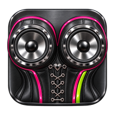
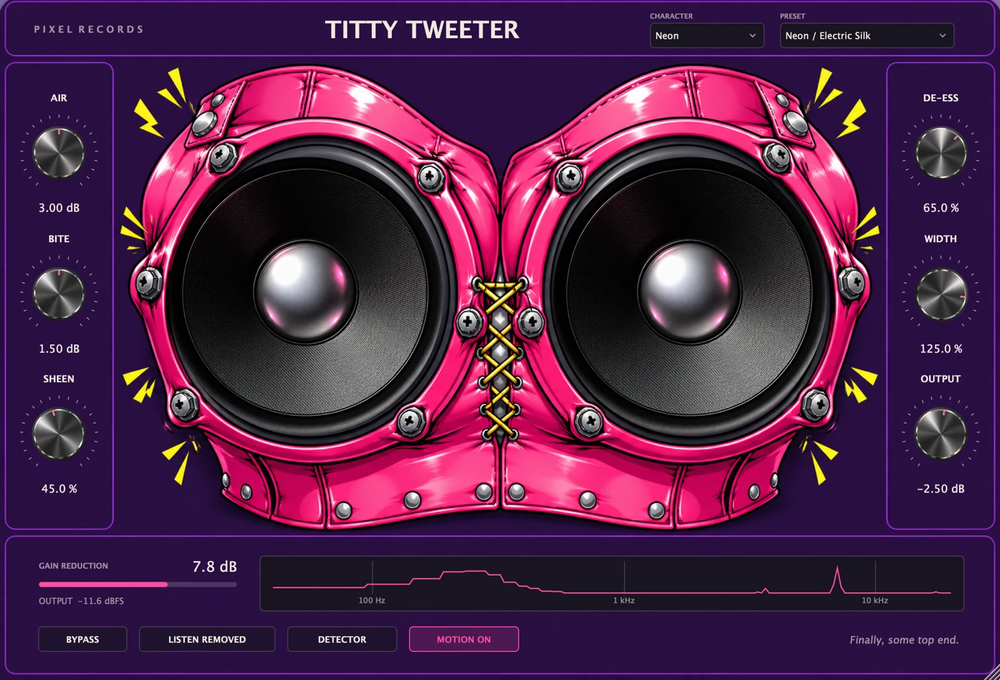
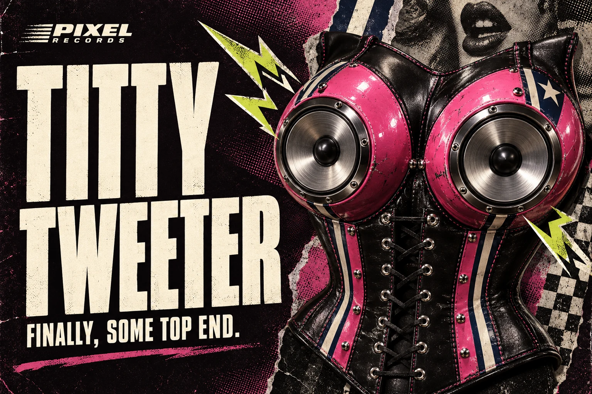
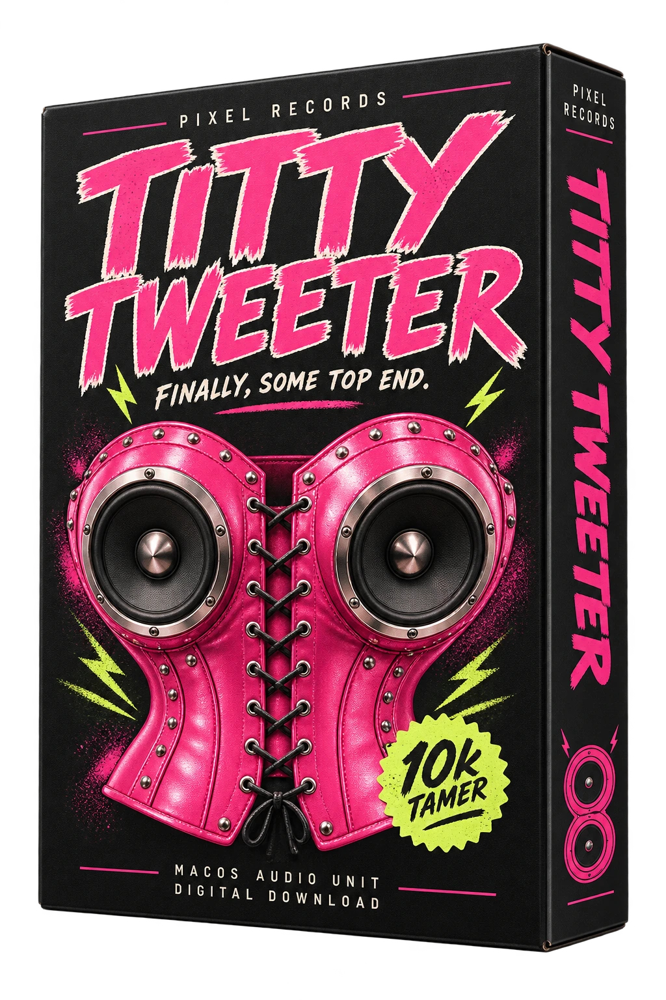
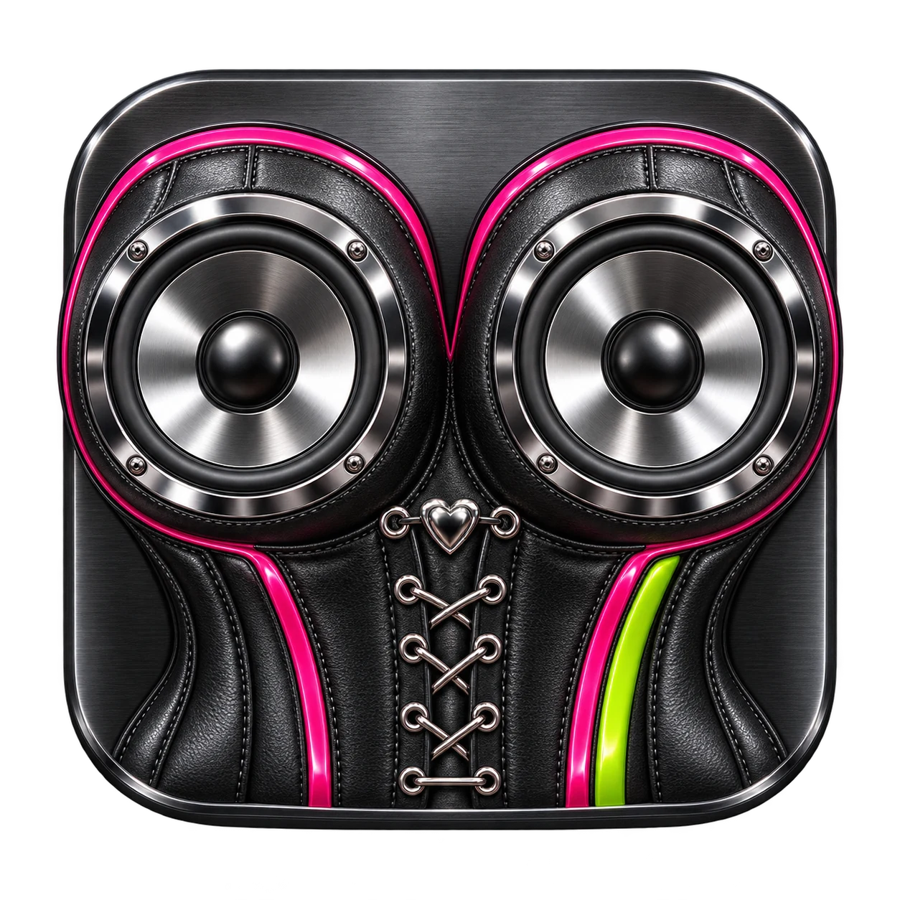

LESS SSS.
MORE YES.
A linked selective de-esser with adjustable detector frequency, bandwidth, threshold, attack and release. Use LISTEN REMOVED to hear what you’re taking away.

PIXELA MACOS AUDIO UNIT WITH ATTITUDE
Tame the harsh. Keep the sparkle.
Meet Titty Tweeter—selective de-essing, high-end lift, and six very different personalities.
FREE & OPEN SOURCE · APPLE SILICON · AUv2

ACTUAL PLUGIN INTERFACE ↗18 SECONDS OF GOOD HIGHS
Your first look, with sound from the creator’s DAW recording.
DRESS FOR THE SOUND YOU WANT
Different looks. Different starting points.
Go dark and controlled, light and open,
or deeply, excessively American.
AMERICANA MODE
They gave us eleven controls.
We chose POWER.
Turn it up for high-end lift and more selective de-essing centered at 10 kHz. Zero is neutral. The empty knob lanes? Now occupied by eagles, bunnies, and questionable advice.
SHOW ME AMERICANAUNDER THE LEATHER
A linked selective de-esser with adjustable detector frequency, bandwidth, threshold, attack and release. Use LISTEN REMOVED to hear what you’re taking away.
AIR, BITE and clean upper-band SHEEN bring the top end forward. Add high-frequency WIDTH, then set OUTPUT to suit your mix.
Native controls. Mono or stereo. Zero reported latency. No account, subscription, network connection or telemetry in the plugin.
FOR YOUR PAGE. YOUR FILM. YOUR QUESTIONABLE TASTE.
Four separate transparent PNGs.
Drop them into a video, give them a bounce,
or let the eagle do the talking.

PROMOTIONAL ARTWORK · PNG MASTER INCLUDED IN THE BRAND KIT

FOR THE KITIKAT STORE
The plugin is real.
The cardboard is imaginary.
A fictional collector’s box for a very real digital download. No shipping. No shelf space required. Just a little more sparkle.
TAKE IT HOME
Free to use. Open to inspect.
Made with a straight face. Mostly.

Audio Unit effect + standalone app.
DOWNLOAD FOR MACDeveloper ID signed · Apple notarized.
~/Library/Audio/Plug-Ins/Components. Create the folder if needed.Apple Silicon (arm64), macOS 12 or later build target. AUv2 effect, mono or stereo. Tested on macOS 27 with Apple’s strict AU validator and a native AU test host. Individual DAWs and older macOS versions still need broader testing. No Intel, Windows or VST3 build is included.
On a full mix, cymbals and bright synths can trigger the de-esser too. LISTEN REMOVED is a diagnostic audition, not vocal isolation. No limiter is included.
AGPLv3 · LICENSE & THIRD-PARTY NOTICES INCLUDED